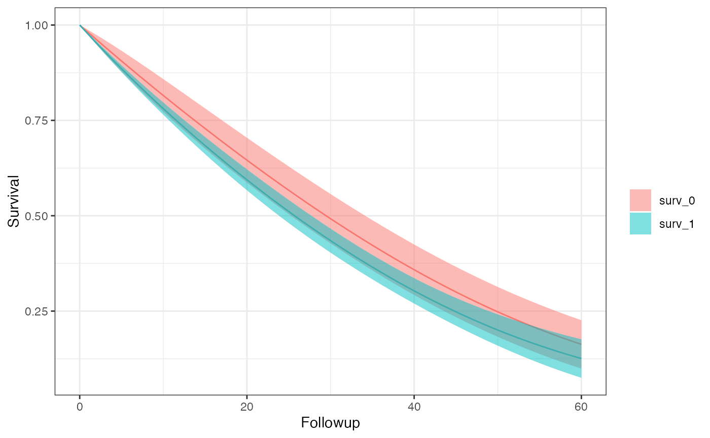

Setting up your Analysis
There are some assumptions which must be met to avoid unintended errors when using SEQuential. These are:
- User provided
time.colbegins at 0 per uniqueid.colentries, we also assume that the column contains only integers and continues by 1 for every time step. e.g. (0, 1, 2, 3, …) is allowed and (0, 1, 2, 2.5, …) or (0, 1, 2, 4, 5, …) are not. - Provided
time.colentries may be out of order as a sort is enforced at the beginning of the function, e.g. (0, 2, 1, 4, 3, …) is valid because it begins at 0 and is continuously increasing by increments of 1, even though it is not ordered. -
eligibleand column names provided toexcused.colsare binary (0/1) flag variables (with respect totime.col)
Step 1 - Defining your options
In your R script, you will always start by defining your options
object, through the SEQopts() helper. There are many
defaults which allow you to target exactly how you would like to change
your analysis. Through this wiki there are specific pages dedicated to
each causal contrast and the parameters which affect them, but for
simplicity let’s start with an intention-to-treat analysis with 20
bootstrap samples.
library(SEQTaRget)
options <- SEQopts(km.curves = TRUE, #asks the function to return survival and risk estimates
bootstrap = TRUE, #asks the model to perform bootstrapping
seed = 1636, #fixes the resamples so the intervals are reproducible
bootstrap.nboot = 20) #asks the model for 20 bootstrap samplesIn general, options will be in the form
{option}.{parameter} - here you may notice that we use
bootstrap.nboot indicating that this parameter affects the
bootstrap
Step 2 - Running the Primary Function
The next step is running the primary R function,
SEQuential(). Here you will give your options, data, and
data-level information. We provide some small simulated datasets to test
on.
data <- SEQdata
model <- SEQuential(data, id.col = "ID",
time.col = "time",
eligible.col = "eligible",
treatment.col = "tx_init",
outcome.col = "outcome",
time_varying.cols = c("N", "L", "P"),
fixed.cols = "sex",
method = "ITT", options = options)
#>
#> Full dataset: 12,180 observations, 11 variables
#>
#> Non-required columns provided, pruning for efficiency
#>
#> Pruned
#>
#> Original dataset (eligible subjects): 9,203 observations, 9 variables
#>
#> Expanding Data...
#>
#> Pre-filter expansion: 310,080 observations
#>
#> Expanded dataset: 248,485 observations, 13 variables
#>
#> Expansion Successful
#>
#> Final analysis dataset: 248,485 observations, 13 variables
#>
#> Moving forward with ITT analysis
#>
#> Bootstrapping with 80% of 300 subjects (240 subjects, ~198,788 observations per resample) 20 times
#>
#> ITT model created successfully
#>
#> Creating Survival curves
#>
#> CompletedWe provide some print statements to help track where the
SEQuential() function is processing at any given point in
time.
Step 3 - Recovering your results
SEQuential() produces a lot of internal diagnostics,
models, and dataframes out of its main function in an S4 class. We
provide a few different methods to handle obtaining your results.
outcome(model) # Returns a list of only the outcome models
#> $`1`
#> $`1`[[1]]
#> Generalized linear model
#>
#> Call:
#> fastglm.default(x = X, y = y, family = family, start = start,
#> method = params@fastglm.method)
#> Family: quasibinomial (logit link)
#>
#> Coefficients:
#> Estimate
#> (Intercept) -6.8593155
#> tx_init_bas1 0.2253094
#> followup 0.0353817
#> followup_sq -0.0001599
#> trial 0.0447179
#> trial_sq 0.0005762
#> sex 0.1270458
#> N_bas 0.0032867
#> L_bas -0.0138509
#> P_bas 0.2009289
#> tx_init_bas1:followup -0.0017040
#>
#> Convergence: converged (7 iterations)
#>
#> $`1`[[2]]
#> Generalized linear model
#>
#> Call:
#> fastglm.default(x = X, y = y, family = family, start = start,
#> method = params@fastglm.method)
#> Family: quasibinomial (logit link)
#>
#> Coefficients:
#> Estimate
#> (Intercept) -7.5686664
#> tx_init_bas1 0.0572035
#> followup 0.0481829
#> followup_sq -0.0002398
#> trial 0.0694546
#> trial_sq 0.0002991
#> sex 0.3623319
#> N_bas 0.0012608
#> L_bas 0.0078599
#> P_bas 0.2267346
#> tx_init_bas1:followup -0.0008032
#>
#> Convergence: converged (3 iterations)
#>
#> $`1`[[3]]
#> Generalized linear model
#>
#> Call:
#> fastglm.default(x = X, y = y, family = family, start = start,
#> method = params@fastglm.method)
#> Family: quasibinomial (logit link)
#>
#> Coefficients:
#> Estimate
#> (Intercept) -1.068e+01
#> tx_init_bas1 2.771e-01
#> followup 3.246e-02
#> followup_sq -1.191e-04
#> trial 1.086e-01
#> trial_sq 2.596e-04
#> sex 1.961e-01
#> N_bas 4.332e-03
#> L_bas -1.251e-02
#> P_bas 5.994e-01
#> tx_init_bas1:followup -1.063e-05
#>
#> Convergence: converged (3 iterations)
#>
#> $`1`[[4]]
#> Generalized linear model
#>
#> Call:
#> fastglm.default(x = X, y = y, family = family, start = start,
#> method = params@fastglm.method)
#> Family: quasibinomial (logit link)
#>
#> Coefficients:
#> Estimate
#> (Intercept) -0.9669277
#> tx_init_bas1 -0.0847453
#> followup 0.0222841
#> followup_sq -0.0001863
#> trial -0.0594655
#> trial_sq 0.0011550
#> sex 0.3406604
#> N_bas 0.0067373
#> L_bas 0.0408462
#> P_bas -0.3909486
#> tx_init_bas1:followup 0.0071088
#>
#> Convergence: converged (4 iterations)
#>
#> $`1`[[5]]
#> Generalized linear model
#>
#> Call:
#> fastglm.default(x = X, y = y, family = family, start = start,
#> method = params@fastglm.method)
#> Family: quasibinomial (logit link)
#>
#> Coefficients:
#> Estimate
#> (Intercept) -7.5351394
#> tx_init_bas1 0.4268098
#> followup 0.0373349
#> followup_sq -0.0002502
#> trial 0.0526084
#> trial_sq 0.0005318
#> sex 0.5449350
#> N_bas 0.0047661
#> L_bas -0.1495825
#> P_bas 0.2469561
#> tx_init_bas1:followup -0.0042417
#>
#> Convergence: converged (4 iterations)
#>
#> $`1`[[6]]
#> Generalized linear model
#>
#> Call:
#> fastglm.default(x = X, y = y, family = family, start = start,
#> method = params@fastglm.method)
#> Family: quasibinomial (logit link)
#>
#> Coefficients:
#> Estimate
#> (Intercept) -7.6406240
#> tx_init_bas1 -0.1156940
#> followup 0.0389073
#> followup_sq -0.0002795
#> trial 0.0742193
#> trial_sq 0.0004675
#> sex 0.3281369
#> N_bas 0.0083933
#> L_bas -0.1784712
#> P_bas 0.2912902
#> tx_init_bas1:followup 0.0030521
#>
#> Convergence: converged (4 iterations)
#>
#> $`1`[[7]]
#> Generalized linear model
#>
#> Call:
#> fastglm.default(x = X, y = y, family = family, start = start,
#> method = params@fastglm.method)
#> Family: quasibinomial (logit link)
#>
#> Coefficients:
#> Estimate
#> (Intercept) -9.0018102
#> tx_init_bas1 0.3579004
#> followup 0.0317738
#> followup_sq -0.0001707
#> trial 0.0776669
#> trial_sq 0.0004174
#> sex 0.0955384
#> N_bas 0.0056463
#> L_bas -0.0122759
#> P_bas 0.4311688
#> tx_init_bas1:followup -0.0042654
#>
#> Convergence: converged (3 iterations)
#>
#> $`1`[[8]]
#> Generalized linear model
#>
#> Call:
#> fastglm.default(x = X, y = y, family = family, start = start,
#> method = params@fastglm.method)
#> Family: quasibinomial (logit link)
#>
#> Coefficients:
#> Estimate
#> (Intercept) -4.217360
#> tx_init_bas1 0.224571
#> followup 0.047272
#> followup_sq -0.000149
#> trial -0.009824
#> trial_sq 0.001069
#> sex 0.275748
#> N_bas 0.004007
#> L_bas 0.065621
#> P_bas -0.122678
#> tx_init_bas1:followup -0.004013
#>
#> Convergence: converged (4 iterations)
#>
#> $`1`[[9]]
#> Generalized linear model
#>
#> Call:
#> fastglm.default(x = X, y = y, family = family, start = start,
#> method = params@fastglm.method)
#> Family: quasibinomial (logit link)
#>
#> Coefficients:
#> Estimate
#> (Intercept) -4.536e+00
#> tx_init_bas1 1.509e-01
#> followup 3.540e-02
#> followup_sq -6.786e-05
#> trial 1.980e-03
#> trial_sq 8.863e-04
#> sex 1.457e-01
#> N_bas 7.400e-03
#> L_bas -3.109e-02
#> P_bas -6.592e-02
#> tx_init_bas1:followup -4.370e-03
#>
#> Convergence: converged (3 iterations)
#>
#> $`1`[[10]]
#> Generalized linear model
#>
#> Call:
#> fastglm.default(x = X, y = y, family = family, start = start,
#> method = params@fastglm.method)
#> Family: quasibinomial (logit link)
#>
#> Coefficients:
#> Estimate
#> (Intercept) -7.123e+00
#> tx_init_bas1 8.728e-02
#> followup 3.766e-02
#> followup_sq -9.976e-07
#> trial 5.440e-02
#> trial_sq 6.127e-04
#> sex 1.821e-02
#> N_bas 8.177e-05
#> L_bas -2.843e-02
#> P_bas 2.211e-01
#> tx_init_bas1:followup 4.661e-03
#>
#> Convergence: converged (4 iterations)
#>
#> $`1`[[11]]
#> Generalized linear model
#>
#> Call:
#> fastglm.default(x = X, y = y, family = family, start = start,
#> method = params@fastglm.method)
#> Family: quasibinomial (logit link)
#>
#> Coefficients:
#> Estimate
#> (Intercept) -2.201e+00
#> tx_init_bas1 8.844e-02
#> followup 2.223e-02
#> followup_sq 8.478e-05
#> trial -4.554e-02
#> trial_sq 1.403e-03
#> sex 9.105e-02
#> N_bas 3.699e-03
#> L_bas -1.426e-01
#> P_bas -2.769e-01
#> tx_init_bas1:followup 8.158e-03
#>
#> Convergence: converged (3 iterations)
#>
#> $`1`[[12]]
#> Generalized linear model
#>
#> Call:
#> fastglm.default(x = X, y = y, family = family, start = start,
#> method = params@fastglm.method)
#> Family: quasibinomial (logit link)
#>
#> Coefficients:
#> Estimate
#> (Intercept) -8.099e+00
#> tx_init_bas1 4.642e-02
#> followup 2.612e-02
#> followup_sq -2.194e-05
#> trial 6.413e-02
#> trial_sq 6.372e-04
#> sex 1.690e-01
#> N_bas 5.351e-03
#> L_bas -4.436e-02
#> P_bas 3.349e-01
#> tx_init_bas1:followup 7.994e-03
#>
#> Convergence: converged (3 iterations)
#>
#> $`1`[[13]]
#> Generalized linear model
#>
#> Call:
#> fastglm.default(x = X, y = y, family = family, start = start,
#> method = params@fastglm.method)
#> Family: quasibinomial (logit link)
#>
#> Coefficients:
#> Estimate
#> (Intercept) -9.0555175
#> tx_init_bas1 0.6478047
#> followup 0.0542168
#> followup_sq -0.0004703
#> trial 0.0799784
#> trial_sq 0.0001404
#> sex 0.2240107
#> N_bas 0.0037200
#> L_bas 0.0968174
#> P_bas 0.3840352
#> tx_init_bas1:followup -0.0119769
#>
#> Convergence: converged (3 iterations)
#>
#> $`1`[[14]]
#> Generalized linear model
#>
#> Call:
#> fastglm.default(x = X, y = y, family = family, start = start,
#> method = params@fastglm.method)
#> Family: quasibinomial (logit link)
#>
#> Coefficients:
#> Estimate
#> (Intercept) -1.046e+01
#> tx_init_bas1 6.029e-01
#> followup 5.089e-02
#> followup_sq -3.486e-04
#> trial 1.072e-01
#> trial_sq 1.740e-04
#> sex 1.096e-01
#> N_bas 4.194e-03
#> L_bas -5.617e-02
#> P_bas 5.530e-01
#> tx_init_bas1:followup -1.541e-02
#>
#> Convergence: converged (3 iterations)
#>
#> $`1`[[15]]
#> Generalized linear model
#>
#> Call:
#> fastglm.default(x = X, y = y, family = family, start = start,
#> method = params@fastglm.method)
#> Family: quasibinomial (logit link)
#>
#> Coefficients:
#> Estimate
#> (Intercept) -9.4339042
#> tx_init_bas1 0.3195517
#> followup 0.0446209
#> followup_sq -0.0001962
#> trial 0.0984771
#> trial_sq 0.0001429
#> sex 0.0860115
#> N_bas 0.0016125
#> L_bas -0.0215202
#> P_bas 0.4390679
#> tx_init_bas1:followup -0.0090178
#>
#> Convergence: converged (3 iterations)
#>
#> $`1`[[16]]
#> Generalized linear model
#>
#> Call:
#> fastglm.default(x = X, y = y, family = family, start = start,
#> method = params@fastglm.method)
#> Family: quasibinomial (logit link)
#>
#> Coefficients:
#> Estimate
#> (Intercept) -2.5128968
#> tx_init_bas1 0.2105845
#> followup 0.0342825
#> followup_sq -0.0002374
#> trial -0.0369591
#> trial_sq 0.0008865
#> sex 0.1569439
#> N_bas 0.0085729
#> L_bas 0.1120179
#> P_bas -0.2619360
#> tx_init_bas1:followup -0.0023137
#>
#> Convergence: converged (3 iterations)
#>
#> $`1`[[17]]
#> Generalized linear model
#>
#> Call:
#> fastglm.default(x = X, y = y, family = family, start = start,
#> method = params@fastglm.method)
#> Family: quasibinomial (logit link)
#>
#> Coefficients:
#> Estimate
#> (Intercept) -6.124e+00
#> tx_init_bas1 7.368e-02
#> followup 2.219e-02
#> followup_sq 3.226e-06
#> trial 2.556e-02
#> trial_sq 6.103e-04
#> sex 2.588e-01
#> N_bas 5.984e-03
#> L_bas 1.137e-01
#> P_bas 1.317e-01
#> tx_init_bas1:followup 6.115e-03
#>
#> Convergence: converged (3 iterations)
#>
#> $`1`[[18]]
#> Generalized linear model
#>
#> Call:
#> fastglm.default(x = X, y = y, family = family, start = start,
#> method = params@fastglm.method)
#> Family: quasibinomial (logit link)
#>
#> Coefficients:
#> Estimate
#> (Intercept) -6.3051565
#> tx_init_bas1 0.4621448
#> followup 0.0446341
#> followup_sq -0.0001721
#> trial 0.0389188
#> trial_sq 0.0006612
#> sex -0.0825751
#> N_bas 0.0035661
#> L_bas -0.1198744
#> P_bas 0.1311997
#> tx_init_bas1:followup -0.0090016
#>
#> Convergence: converged (3 iterations)
#>
#> $`1`[[19]]
#> Generalized linear model
#>
#> Call:
#> fastglm.default(x = X, y = y, family = family, start = start,
#> method = params@fastglm.method)
#> Family: quasibinomial (logit link)
#>
#> Coefficients:
#> Estimate
#> (Intercept) -8.471e+00
#> tx_init_bas1 2.708e-01
#> followup 4.048e-02
#> followup_sq -8.973e-05
#> trial 6.878e-02
#> trial_sq 4.768e-04
#> sex 1.661e-01
#> N_bas 2.092e-03
#> L_bas 6.857e-02
#> P_bas 3.510e-01
#> tx_init_bas1:followup -5.788e-03
#>
#> Convergence: converged (3 iterations)
#>
#> $`1`[[20]]
#> Generalized linear model
#>
#> Call:
#> fastglm.default(x = X, y = y, family = family, start = start,
#> method = params@fastglm.method)
#> Family: quasibinomial (logit link)
#>
#> Coefficients:
#> Estimate
#> (Intercept) -1.009e+01
#> tx_init_bas1 1.894e-01
#> followup 3.772e-02
#> followup_sq -1.252e-04
#> trial 1.117e-01
#> trial_sq -6.498e-05
#> sex 2.295e-01
#> N_bas 2.054e-03
#> L_bas 4.281e-02
#> P_bas 5.282e-01
#> tx_init_bas1:followup -2.651e-03
#>
#> Convergence: converged (3 iterations)
#>
#> $`1`[[21]]
#> Generalized linear model
#>
#> Call:
#> fastglm.default(x = X, y = y, family = family, start = start,
#> method = params@fastglm.method)
#> Family: quasibinomial (logit link)
#>
#> Coefficients:
#> Estimate
#> (Intercept) -8.9528151
#> tx_init_bas1 0.3514119
#> followup 0.0584130
#> followup_sq -0.0005134
#> trial 0.0986973
#> trial_sq -0.0000760
#> sex 0.2732790
#> N_bas 0.0026618
#> L_bas 0.0094163
#> P_bas 0.3964909
#> tx_init_bas1:followup -0.0164729
#>
#> Convergence: converged (4 iterations)
km_curve(model) # Prints the survival curve
risk_data(model)
#> Index: <Followup>
#> Method Followup A Risk 95% LCI 95% UCI SE
#> <char> <num> <char> <num> <num> <num> <num>
#> 1: ITT 60 0 0.8372582 0.7738406 0.9006758 0.03235651
#> 2: ITT 60 1 0.8744359 0.8240007 0.9248710 0.02573269
risk_comparison(model)
#> Followup A_x A_y Risk Ratio RR 95% LCI RR 95% UCI log(RR) SE
#> <num> <fctr> <fctr> <num> <num> <num> <num>
#> 1: 60 risk_0 risk_1 1.0444041 0.9735388 1.120428 0.03584966
#> 2: 60 risk_1 risk_0 0.9574838 0.8925163 1.027180 0.03584966
#> Risk Difference RD 95% LCI RD 95% UCI RD SE
#> <num> <num> <num> <num>
#> 1: 0.03717768 -0.02229238 0.09664774 0.03034243
#> 2: -0.03717768 -0.09664774 0.02229238 0.03034243